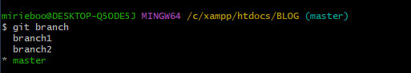
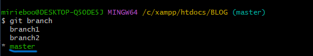
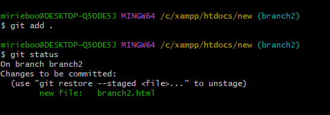

What is Git
Git is a Version Control System.
A Version Control System (VCS) is a software tool that helps to track and manage changes to files and any other types of didgital content over time.
Git is majorly used by software engineers to manage their code in github and collaborate with other colleagues in projects. There are more examples of VCS like Azure DevOps server,Centralized VCS, GitLab,Bazaar and many more.
If you have no idea what Git is, this is the place for you
Installing Git
Your operating system does not come with Git installed,especially windows operating system.
To check if you have Git installed in your operating system or not, you use the command git --version.
- Type the command
git --version
- Hit enter
- If you have Git installed , you should see something like git version x.y

a screenshot of git version commang confrimimg installed git
- If not, then you will see an error message that the command is not recognized.
- If you don't have Git installed, head over to git website and download Git from there.
Configuring Git
Now let Git know who you are. This is an important step after installing Git as each Git commit uses this information
To let git know who you are, you pass in your username and email adress used in your Git Hub account.
Intializing a Git repository
Adding files to the staging area
- After initializing the git repository,you can now add the project to the staging area.
- A staging area is an area where changes are made to files are prepared before they are committed to a repository.
- Whenever you hit amilestone, or finish a part of the project,you should add the files to a staging area.
- To add a file to the staging area, use the command
git add filename
- If you have more than one file, you can use
git add .
- If files have not been added to the staging area they are called untracked files and the files added in the staging area are called tracked files

this is an example of an untracked files.
- After running the git add . command this is how your git bash should look like

staging the files
Commiting changes
Branches
- A branch is a separate version of the main repository.
- Branches allow multiple developers to work on different features , bug fixes, or experiments simultaneously without interfering with each other's work.
- When the work is complete, a branch can be merged into the main project.
Creating a branch
Viewing all branches
- To view all the branches we have, we use the command
git branch

all the present branches
Switching active branches
- The highlighted name shows the active branch

highlighted name is the active branch
- To switch through active branches, we use the
git checkout branch-name
- To see the active branch , again we use the git branch command

you can now see the active branch has been switched to another.
Merging a branch
- Once you finish working in your branch and you are comfortable with what you have done, you merge the branch to the main/master branch.
- The main/master ususally contains the latest ,stable version of the codebase. This is whereall finished and tested features are integrated.
- To merge a branch, add the changes made in the branch to the staging area and commit them.

add and commit the changes in the new branch
- After that move to the main/master to merge the branch to the main.
- Use the
git merge branch-name
command to merge the branch.

merging a branch to the main/master branch
Deleting a branch
RECCOMENDATIONS
To sharpen your skills on git, practice what you have read above and learn about pushing the projects to GitHub using Git.
ALL THE BEST!